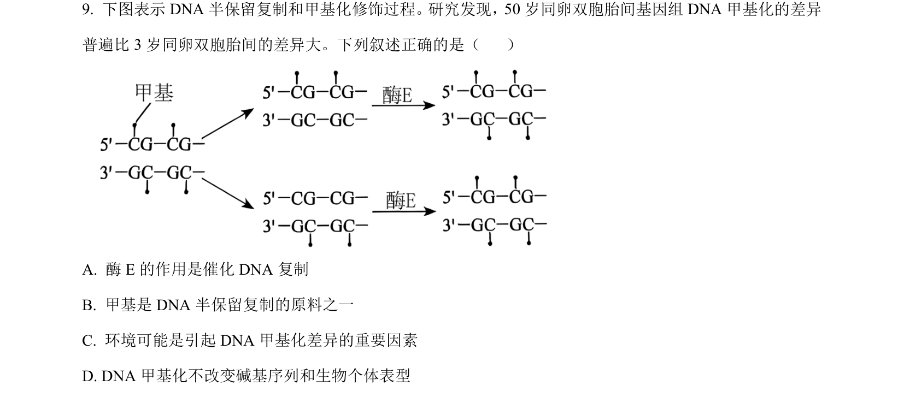
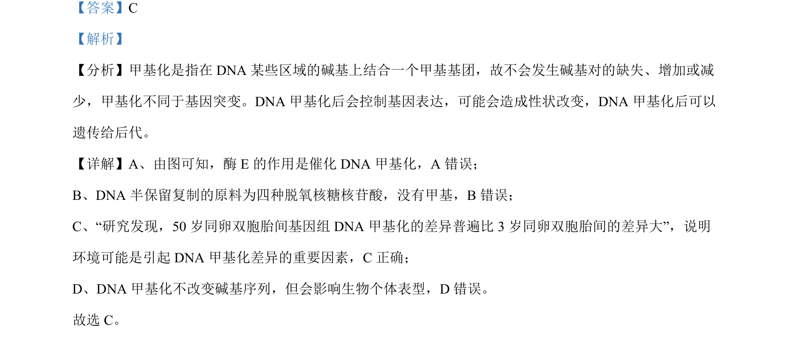

考点：DNA甲基化 表观遗传 基因表达调控 环境影响

考查DNA甲基化对基因表达及性状的影响，结合实例说明环境因素与甲基化差异的关系

📄 原 PDF 第 6 页：
素材/真题/吉林/2008-2024·（吉林）生物高考真题/2024年高考生物试卷（辽宁）（解析卷）.pdf
【答案】C 【解析】 【分析】甲基化是指在 DNA 某些区域的碱基上结合一个甲基基团，故不会发生碱基对的缺失、增加或减 少，甲基化不同于基因突变。DNA 甲基化后会控制基因表达，可能会造成性状改变，DNA 甲基化后可以 遗传给后代。 【详解】A、由图可知，酶 E的作用是催化 DNA 甲基化，A 错误； B、DNA 半保留复制的原料为四种脱氧核糖核苷酸，没有甲基，B错误； C、“研究发现，50 岁同卵双胞胎间基因组 DNA 甲基化的差异普遍比 3 岁同卵双胞胎间的差异大”，说明 环境可能是引起 DNA 甲基化差异的重要因素，C正确； D、DNA 甲基化不改变碱基序列，但会影响生物个体表型，D 错误。 故选 C。